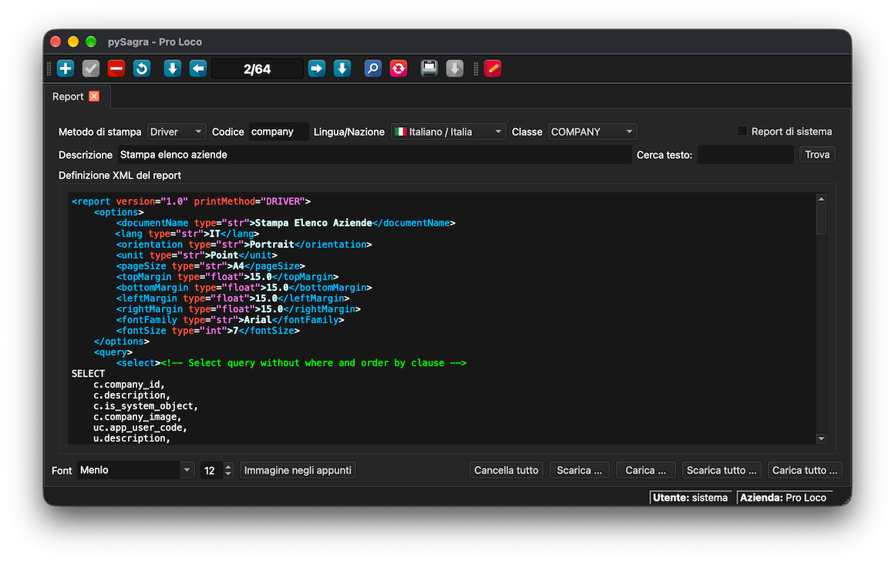

Report
Le definizioni dei report usati dal programma vengono create e modificate in questa scheda e salvate nel database. Ogni report ha il suo metodo di stampa (driver per
le stampanti del sistema operativo, ESC/POS per le stampanti termiche), una classe che dice dove si usa e una lingua associata.

Impostazioni dell'anagrafica dei report:
- Metodo di stampa: può assumere i valori "Driver" oppure "ESC/POS"
- Codice: stringa alfanumerica che identifica il report
- Lingua/Nazione: identifica la lingua per la quale è stato realizzato in report
- Classe: identifica un raggruppamento di report con finalità specifica
- Descrizione: la descrizione del report, sempre modificabile
- Report di sistema: un report di sistema non si può modificare né cancellare
- Definizione XML del report: contiene il testo XML della definizione del report; tag, struttura, elementi, ecc. sono diversi tra report "Driver" e report "ESC/POS"
- Cerca testo: permette la ricerca di stringhe di testo all'interno della definizione XML del report
- Font: permette la scelta del font da utilizzare nella visualizzazione della Definizione XML del report e la sua dimensione
I tasti disponibili permettono di:
- Immagine negli appunti: copia il contenuto di un'immagine (bmp, png, jpg) nella clipboard in formato base64 in modo da incollarla nella definizione del report come testo, utile per inglobare immagini nella definizione del report
- Cancella tutto: elimina, dopo conferma, TUTTI i report presenti nel database
- Scarica ...: memorizza su filesystem il report corrente, compresso in formato zip, chiedendo solo la posizione, il nome del file viene costruito come <codice_report>_<localizzazione>.rpt.zip
- Carica ...: carica un report da un file in formato .rpt.zip
- Scarica tutto ...: memorizza tutti i report su filesystem in formato rpt.zip chiedendo solo in quale cartella, il nome dei file viene costruito come in precedenza ma con un numero progressivo a due caratteri come prefisso <progressivo>_<codice_report>_<localizzazione>.rpt.zip. La lista è ordinata quindi a meno che non si aggiungano altri report con codici nuovi il progressivo assegnato è sempre lo stesso e risulta utile esportare ogni volta la lista completa dei report piuttosto che solo quelli modificati
- Carica tutto ...: importa nel database tutti i report in formato rpt.zip presenti su una cartella del filesystem
La stampa di un report è sempre associata alla finestra di Stampa presente nel menu e toolbar Modifica.
Inizio pagina